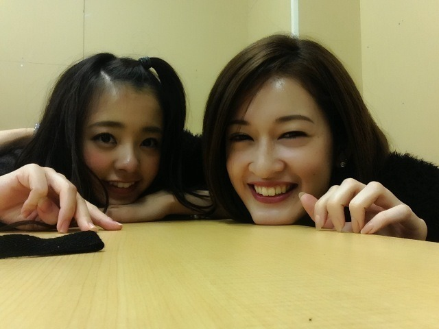
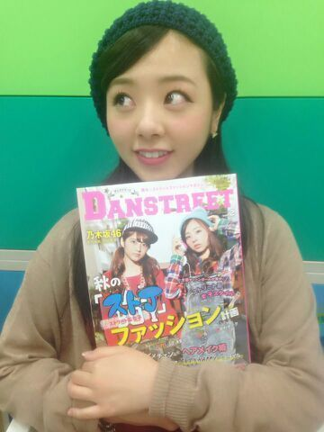

| 2014/10 23 Thu | 発売しました。// りさこ ・よねとくちゃん卒業。 まに |
こんにちわ..*
ろってぃー or まにだよ !!
この前 live直後に 崩れきったヘアーとメイクのまま、せっちゃんと写真いっぱい撮ったんよ〜
命のちょんまげ持たれた〜。
机やで〜..*にや。

あっ、、、 それと雑誌発売したからね〜＼(^-^)／
『DANSTREET』と『アニカンヤンヤン』
皆 見てくれた〜
 ？
？

昨日 本屋さんに寄ったから、置いてあるかな〜？と思ったら、女性雑誌コーナーの所にドーン!!! と若月とろってぃーの顔があって嬉しかった〜♪へへ
しかも中読んでたら、、 キッズダンサーの時から活躍してる、『RUSH BALL』のまいかちゃんと きょうかちゃんが載ってて嬉しかった♪
ダンスのコンテストに行けば絶対要るし、要るとゆうか、絶対優勝する子たちで、本当にびっくりする位ダンスが上手くて、かっこよくて、、、
中１の夏に海の家で踊ったことがあって、その時にきょうかちゃんも居て、ダンスに圧倒した思い出があります.♪.♪.♪
＿＿＿＿＿＿＿＿＿＿＿＿＿
《 話かわります。》
あと、遅くなってごめんね。
よねとくちゃん と りさこ。
卒業おめでとう..*
二人共 乃木坂に入って1年半、、、
あっとゆう間だったね。。
1年半色々あったけど
live等では、１期生の後ろで踊ることばっかだったのに、文句言わずに一生懸命やってる姿に心打たれました。
本当にありがとう。
少しの間だったけど、二人に勇気をもらった人はたくさん居ると思います。
また 乃木坂のliveとかに遊びにきてね*^^*
また更新します。のし。まに。
コメント(152)
2014/10/23 16:00